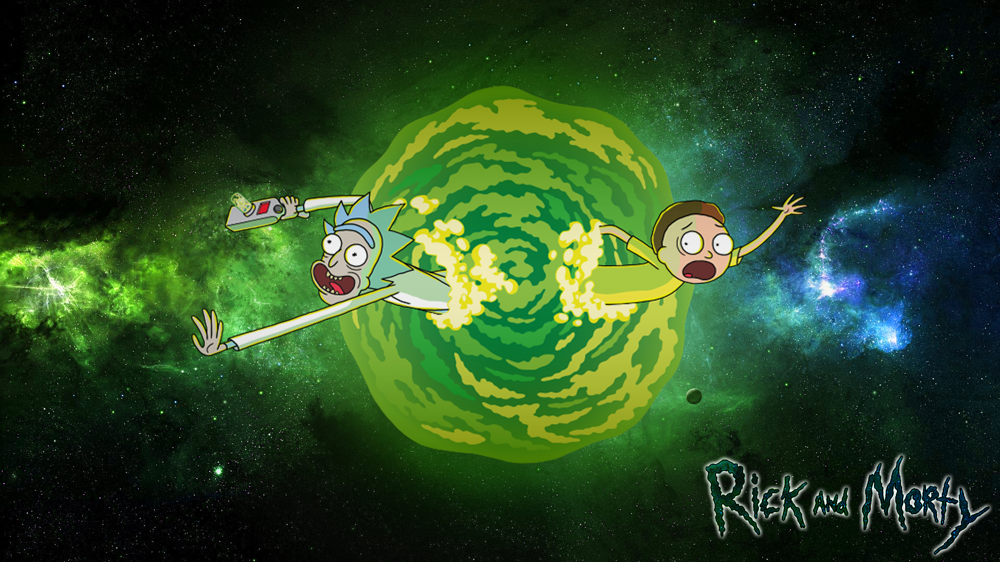
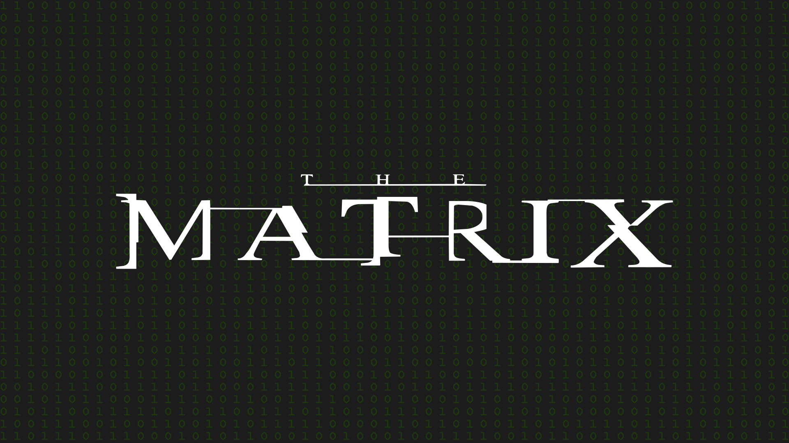
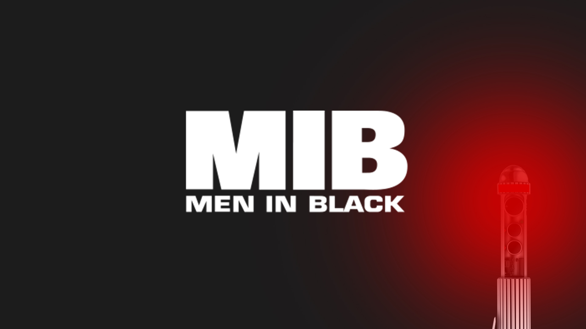
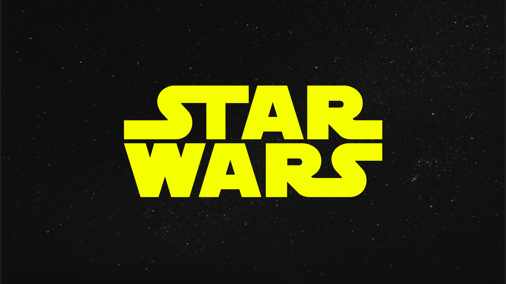
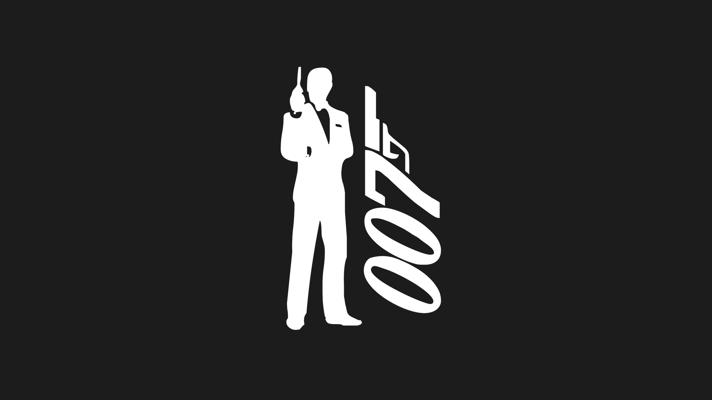
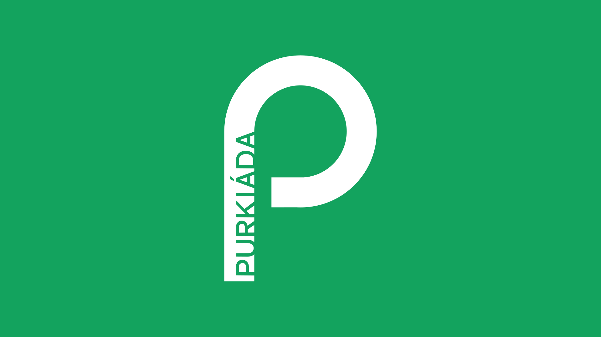

Historie zadání
Purkiáda 2020 - 11. ročník - téma Rick and Morty
Purkiáda 2019 - 10. ročník - téma Matrix
Purkiáda 2018 - 9. ročník - téma Men in Black
Purkiáda 2017 - 8. ročník - téma Star Wars
Purkiáda 2016 - 7. ročník - téma Agent 007
Purkiáda 2015 - 6. ročník
Purkiáda 2014 - 5. ročník
Purkiáda 2013 - 4. ročník
Purkiáda 2011 - 3. ročník
Purkiáda 2010 - 2. ročník
Purkiáda 2009 - 1. ročník
Doporučení
- Pořádně si přečíst zadání vždy, pokud má zadání několik bodů. Spousta lidí zapomene či v euforii ze zvládnutého úkolu přejde zbytek úkolu a zbytečně se okrádá o body.
- Neodpovídat na věci, ktere nás nezajímají, ale na položenou otázku.
- Je třeba si ověřovat informace, které najdu na internetu. I když se informace liší jen mírně, je nutno posuzovat, z nakolik věrohodného zdroje informace získáváme, případně považovat za pravdivou informaci, která se objeví vícekrát.
- Nalezené výsledky aspoň posoudit vlastním zdravým rozumem. Pokud někdo najde, že podle jistého zdroje 13.12. vychází slunce v 6 hodin a přitom vím, že v 7 je rozhodně tma jak v ranci, asi to nebude v pořádku.
- Pokud se vyskytne složitý úkol, se kterým si nevím rady, není třeba ho řešit za každou cenu hned. Můžu ho přeskočit a vrátit se k němu až ve chvíli, kdy mám vyřešeny ty příklady, které jsou jednodušší. Vyhneme se tím zbytečné ztrátě času, který by byl jinak využit pro lehčí příklady.
- Také je vhodné si po sobě svou práci zkontrolovat, a to nejlépe několikrát (zbývá-li čas). Je zbytečné práci odevzdávat před vypršení času, jen proto být první.
- A samozřejmostí je o tom, co píšu, přemýšlet; to platí zejména při vyplňování křížovky. V tajence křížovky určitě nenajdeme pravopisné chyby ani exoticky znějící neznámá slova. Pokud ano, je něco špatně...
- Přidat na originalitě. nezjímají nás okopírované hotové věci, ale vlastní, byť ne dokonalé řešení. navíc při použití cizího hotového obrázku se mohu dostat do sporu s autorskými právy.
- Programování: není to cyklus, když to opakuji jen 1x a nerozdělím to do kroků, které se pak opakují.